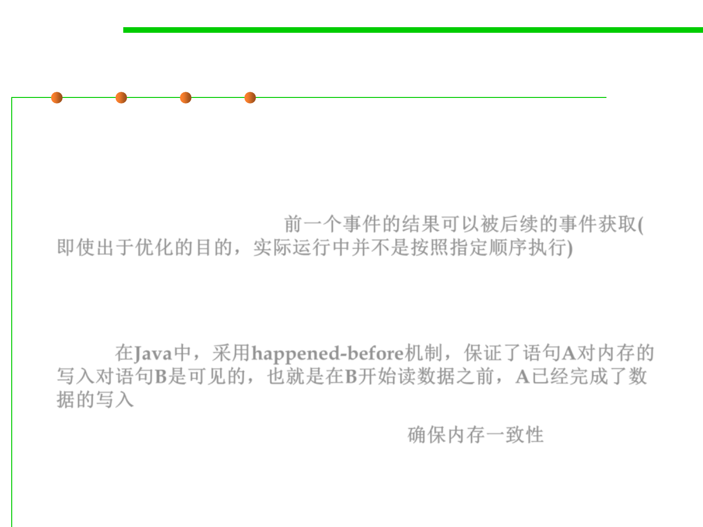

happens-before relationship
10.1 Concurrency and Thread-Safety
▪ In computer science, the happened-before relation is a relation
between the result of two events, such that if one event should
happen before another event, the result must reflect that, even if
those events are in reality executed out of order (usually to
optimize program flow). 前一个事件的结果可以被后续的事件获取(
即使出于优化的目的，实际运行中并不是按照指定顺序执行)
▪ In Java, a happens-before relationship is simply a guarantee that
memory written to by statement A is visible to statement B, that is,
that statement A completes its write before statement B starts its
read. 在Java中，采用happened-before机制，保证了语句A对内存的
写入对语句B是可见的，也就是在B开始读数据之前，A已经完成了数
据的写入
▪ This is to ensure Memory Consistency. 确保内存一致性